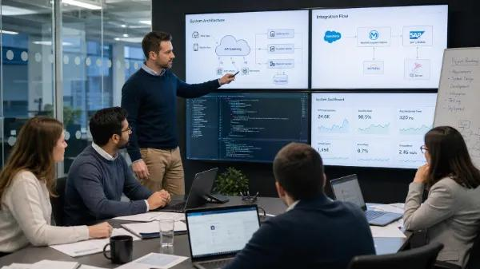
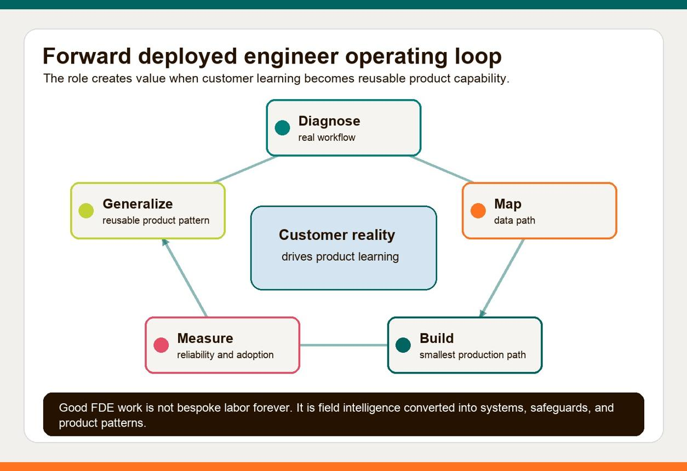

Chapter overview
It's Tuesday morning. You're an FDE working on an enterprise AI deployment.
At 9:00 AM, you're debugging an authentication failure in a customer's staging environment.
At 10:30 AM, you're explaining the deployment architecture to their security team.
After lunch, you're writing Python to integrate their internal APIs.
At 3:00 PM, you're helping a product engineer reproduce a bug that could affect several customers.
And at 4:30 PM, you're preparing a demonstration for the customer's operations director.
This is one of the defining characteristics of forward-deployed engineering: you move between writing software, understanding customers, coordinating stakeholders, and delivering results.
But not every FDE works like this. The role varies significantly by company, engagement maturity, and product.
This chapter explores what the work actually looks like, including the less glamorous responsibilities that job descriptions often overlook.
Learning objectives
By the end of this chapter, you should be able to:
Describe a realistic FDE workday and working week.
Understand how FDEs balance coding, meetings, troubleshooting, and customer communication.
Distinguish between startup, enterprise platform, and AI-focused FDE work.
Recognize the artifacts and communication habits that keep engagements moving.
Respond appropriately to competing priorities and unexpected customer escalations.
Evaluate whether the daily responsibilities of an FDE match your career interests.
5.1 The FDE wears multiple hats
An FDE isn't necessarily a developer in the morning and a consultant in the afternoon. The responsibilities are often intertwined.
Software builder
Writes integrations, services, tests, and customer-facing features.
Problem investigator
Finds the real workflow problem and validates assumptions.
Technical designer
Makes architecture and integration trade-offs.
Customer partner
Explains decisions and manages expectations.
Troubleshooter
Diagnoses failures across systems and organizational boundaries.
Outcome owner
Measures whether the deployed solution is delivering value.
These are not six separate job titles. They're six modes of work that can appear in the same engagement.
A strong FDE develops the judgment to know which mode is needed at a given moment.
5.2 A realistic FDE workday
Let's follow a fictional FDE, Maya, who is helping Meridian Bank deploy the AI-assisted document review solution introduced in Chapter 3.
The project is in Week 5 of an eight-week pilot. The core application is running in staging, but integration testing and operational readiness are still underway.
Tuesday · Meridian Bank engagement
9:00–9:30 AM
Review alerts and overnight test results
Check integration failures, model evaluation results, and unresolved issues from the previous day.
9:30–10:15 AM
Customer engineering sync
Review blockers, dependencies, upcoming changes, and decisions needed from the bank.
10:15 AM–12:00 PM
Focused coding and debugging
Investigate a failed API integration and add error handling and regression tests.
12:00–1:00 PM
Lunch and buffer
Leave room for breaks and unexpected issues.
1:00–2:00 PM
Security and architecture review
Discuss data handling, service identity, and the deployment boundary with customer stakeholders.
2:00–3:30 PM
Implementation and testing
Complete the integration fix and verify it in staging.
3:30–4:00 PM
Internal product engineering sync
Report a reusable product limitation discovered during the engagement.
4:00–4:45 PM
Customer demo preparation
Validate the demo environment and confirm what can honestly be shown.
4:45–5:00 PM
Status update and next-day planning
Document completed work, risks, owners, and next decisions.
What makes this different from a typical SWE day?
Maya's coding tasks are directly connected to customer decisions and deployment constraints.
If she discovers that the customer's API cannot return a required field, she may need to investigate the code, talk to the API owner, propose an alternative, and update the delivery plan.
In many product SWE roles, those activities are distributed among engineers, product managers, technical leads, and customer-facing teams.
For an FDE, they may all fall within the same area of responsibility.
That doesn't make the FDE more important than the SWE. It makes the FDE's working context and accountability different.
5.3 How the work changes across the week
One day is not enough to understand the role.
An FDE's schedule is shaped by the engagement stage, customer availability, and unexpected technical problems.
Here's an illustrative week during an active implementation.
A week in the life — Week 5 of a pilot
Tap a day to explore its responsibilities.
Monday
Plan and unblock
9:00
Review integration test failures
10:00
Customer sprint and blocker review
11:00
Investigate missing API fields
1:00
Implement mapping changes
3:00
Update delivery risks and owners
End-of-day output
Updated implementation plan, documented blockers, and code changes.
A week in the life — Week 5 of a pilot
Tap a day to explore its responsibilities.
Tuesday
Build and validate
9:00
Review test results
9:30
Customer engineering sync
10:15
Coding and debugging
1:00
Security architecture review
2:00
Integration testing
4:00
Prepare customer demo
End-of-day output
Tested integration and architecture decisions.
A week in the life — Week 5 of a pilot
Tap a day to explore its responsibilities.
Wednesday
Customer collaboration
9:00
Observe analysts using the pilot
10:30
Investigate workflow friction
1:00
Implement UI improvements
3:00
Run quality evaluations
4:00
Review findings with operations
End-of-day output
User feedback, revised workflow, and evaluation results.
A week in the life — Week 5 of a pilot
Tap a day to explore its responsibilities.
Thursday
Technical delivery
9:00
Resolve deployment issues
11:00
Review pull requests
1:00
Run staging regression tests
3:00
Coordinate infrastructure approvals
4:00
Document rollout plan
End-of-day output
Release candidate and updated readiness checklist.
A week in the life — Week 5 of a pilot
Tap a day to explore its responsibilities.
Friday
Demonstrate and align
9:00
Validate demonstration data
10:00
Customer stakeholder demo
11:30
Review acceptance criteria
1:00
Internal product feedback
3:00
Next-week planning and status report
End-of-day output
Customer feedback, agreed decisions, and next milestones.
Notice that Friday's output is not simply a count of tickets completed. It includes decisions, customer feedback, and alignment on what happens next.
Time allocation is not fixed
During discovery, the FDE might spend most of the day interviewing users and scoping work.
During implementation, coding and integration testing may dominate.
During a production incident, troubleshooting and communication may consume nearly the entire day.
A practitioner-oriented overview describes this variation and highlights context switching as a major adjustment for engineers entering the role. Its proposed time percentages should be treated as illustrative, not representative industry statistics.
5.4 Three common types of FDE work
The title Forward Deployed Engineer can describe different working environments. These are useful categories, not formal industry classifications.
Startup FDE
At an early-stage company, an FDE may be responsible for nearly everything between the product and the customer: discovery, prototyping, custom integration, deployment, and troubleshooting.
There may be limited documentation and few established processes.
Typical challenge: Deliver quickly without creating a different, unmaintainable product for every customer.

Enterprise platform FDE
At an established software company, FDEs may work with large customers, existing platform capabilities, dedicated account teams, and formal security and deployment processes.
Integration complexity and stakeholder coordination can be substantial.
Typical challenge: Deliver customer-specific value while remaining aligned with the product architecture and organizational processes.
AI-focused FDE
At an AI platform company, FDEs may build agents, retrieval systems, tool integrations, evaluations, and human-review workflows.
The job combines ordinary software engineering with model-specific uncertainty.
Typical challenge: Prove that the AI system performs reliably on representative customer workflows, not merely on polished demonstrations.
OpenAI's FDE job descriptions explicitly include discovery, system design, full-stack implementation, production rollout, adoption, and evaluation-driven feedback to product and research teams. This is a useful example of the AI-focused model.
5.5 The less visible parts of the job
Videos and job descriptions often emphasize customer workshops, interesting technical problems, and rapid deployments.
Those activities are real, but several less visible responsibilities are equally important.
Documentation and handoff
An FDE may understand an integration better than anyone else because they built it. That creates risk if the solution cannot be operated without them.
A useful handoff includes architecture, configuration, deployment instructions, known limitations, monitoring, support ownership, and escalation procedures.
Waiting on customer dependencies
A customer may take days or weeks to approve network access, provide representative data, or identify an API owner.
An effective FDE tracks dependencies, escalates them constructively, and finds parallel work where possible.
Repeated context switching
You may spend an hour investigating a Python exception, then immediately explain a project delay to a nontechnical executive.
Both tasks require concentration, but in different ways.
Protecting focused engineering time is therefore an important part of the role.
Navigating ambiguity
Sometimes the customer's business sponsor and engineering team disagree about what is feasible.
The FDE must help translate those disagreements into clear requirements, trade-offs, and decisions—not become a substitute for the customer's decision-making authority.
Travel and on-site work
Some FDE roles require substantial customer travel; others are primarily remote or hybrid.
For example, an OpenAI FDE posting lists travel of up to 50%. That's a role-specific requirement, not an expectation for every FDE position.
When evaluating an opportunity, examine the actual travel requirement, customer coverage model, on-call expectations, and support responsibilities.
5.6 What does success look like at the end of the day?
Consider two status updates.
Activity-oriented update:
Completed the API integration, fixed three bugs, attended two meetings, and updated the deployment scripts.
Outcome-oriented update:
The bank's document processing workflow now passes the staging integration tests. We resolved the authentication blocker, and the customer engineering team has approved the test configuration. The remaining risk is production network access, owned by the bank's infrastructure team, with a decision expected Thursday.
The second update is more useful because it explains progress toward the customer outcome.
It also communicates risk and ownership.
A useful daily habit is to answer three questions:
What meaningful progress did we make?
What could prevent the next milestone?
What decision or action is needed next?
These questions help the FDE remain accountable without turning every status report into a lengthy project document.
5.7 A realistic customer escalation
Let's return to Maya at Meridian Bank.
It's Wednesday at 2:15 PM. She's working on the validation service when a customer engineer messages her:
"The document processing service is returning errors for some files. Our VP is demonstrating the pilot tomorrow. Can you fix this today?"
Maya has three competing responsibilities: diagnose the failure, protect the agreed deployment schedule, and communicate accurately.
Her first response should not be a promise to fix everything immediately.
She needs to establish the impact.
A practical escalation workflow
01
Establish severity
Which users, document types, and environments are affected? Is production impacted?
02
Contain the problem
Determine whether an approved rollback, workaround, or restriction can prevent further impact.
03
Investigate with evidence
Examine logs, recent changes, representative inputs, and reproducible failures.
04
Communicate options
Explain the known impact, uncertainty, possible remedies, and expected next update.
05
Validate the resolution
Retest affected workflows and verify that the fix doesn't introduce regressions.
06
Document and learn
Record the cause, remediation, monitoring improvements, and any reusable product fixes.
What Maya discovers
After investigation, Maya finds that the service fails when certain scanned documents contain rotated pages.
The issue affects 8% of the representative test set. The failure is reproducible, and the team has a potential preprocessing fix, but it has not yet passed regression testing.
A responsible customer update would explain the affected document types, current workaround, testing plan, and what can safely be demonstrated tomorrow.
The key skill here is maintaining technical credibility while managing customer expectations.
5.8 The internal product feedback loop
A forward-deployed engineer doesn't just consume the company's product capabilities. They can help improve them.
Suppose Maya encounters the same document preprocessing issue at three different customers.
There are two possible approaches.
Approach A: Add a customer-specific workaround to each deployment.
Approach B: Document the recurring issue, demonstrate its impact, and work with product engineering on a reusable improvement.
Approach B is often more scalable, provided the product team agrees that the requirement is broadly applicable.
A former Palantir engineering leader has described the FDE role as an extension of product development, emphasizing customer learning and reusable solutions rather than treating FDEs purely as sales support or implementation contractors.
A useful field-to-product report might contain:
Field | Example |
|---|---|
Customer problem | Rotated document pages cause extraction failures |
Frequency | Observed in three engagements |
Impact | Manual intervention and processing delays |
Reproduction | Sanitized test case and steps |
Current workaround | Preprocessing before ingestion |
Proposed improvement | Native orientation handling |
Product team decision | Pending prioritization |
This is how customer-specific engineering can create value across the wider product.
5.9 Recommended learning resources
These resources include firsthand career perspectives, an actual employer role description, and practitioner accounts. Read them critically: an individual engineer's experience does not represent every FDE organization.
WATCH · REQUIRED · VIDEO
I Left Google for an FDE Role — Here's How My Work & Life ChangedSource link needs rechecking. See the resource directory for details.
Anu Sharma · May 2026
A personal account of moving from software engineering to forward-deployed engineering.
Focus: 00:45–05:30 for role and day-to-day differences; 07:30–11:30 for career trade-offs.

WATCH · OPTIONAL · VIDEO
This Is How Forward Deployed Engineering Is Actually DoneSource link needs rechecking. See the resource directory for details.
AI LABS · August 2026
An overview of FDE workflows, customer adoption, and AI deployment challenges. Useful for discussion, although its market statistics and company-specific anecdotes should be independently corroborated.
READ · REQUIRED · EMPLOYER DESCRIPTION
OpenAI — Forward Deployed Engineer
Read the actual responsibilities, particularly technical delivery, customer collaboration, product feedback, and travel expectations.
READ · REQUIRED · PRACTITIONER OVERVIEW
A Day in the Life of a Forward Deployed Engineer
FDEInterviews · June 2026
Covers customer standups, vague requests, implementation, evaluation, stakeholder conversations, and travel. Use it as an illustrative account rather than a universal daily schedule.
READ · OPTIONAL · INDUSTRY PERSPECTIVE
What Companies Get Wrong About Forward-Deployed EngineeringSource link needs rechecking. See the resource directory for details.
Business Insider · 2026
A former Palantir leader discusses FDE autonomy, customer immersion, and the relationship between deployments and product engineering.
Resource reflection
After watching the first video, consider whether you'd enjoy a role with frequent changes in context and direct customer accountability. Then compare that perspective with the actual responsibilities in the OpenAI job description.
Write down two responsibilities that appeal to you and two that you would want to investigate before accepting an FDE role.
5.10 Practical exercise — Plan an FDE workday
Exercise 5.1: Prioritize your day
You're the FDE responsible for a customer pilot. It's 9:00 AM, and five new tasks have arrived.
The customer demonstration is tomorrow. The staging environment is currently failing authentication, and a security reviewer has requested an explanation of the system's data flow.
Choose the order in which you'd address the tasks. There's no single perfect ordering, but your reasoning should account for urgency, dependencies, and customer impact.
1
Investigate staging authentication failure
Blocks testing and tomorrow's demo.
2
Respond to security architecture questions
Review is required before the next deployment milestone.
3
Build a requested dashboard enhancement
Useful, but not part of tomorrow's acceptance criteria.
4
Report a reusable integration bug
Another customer may encounter the same issue.
5
Send customer status and risk update
Stakeholders need to understand the demo risk and next steps.
Explain your reasoning
Auto-saved on this device. Review your answer for customer impact, evidence, assumptions, ownership, and a clear next step.
Suggested reasoning
First, establish the impact of the authentication failure and assign immediate investigation. Notify the customer promptly that the demo is at risk rather than waiting until the end of the day.
Coordinate the security response in parallel where possible, since it affects the deployment milestone.
Defer the optional dashboard enhancement unless it becomes essential to agreed acceptance criteria. Document and route the reusable product bug with sufficient evidence.
The precise ordering may vary depending on who is available, how severe the authentication issue is, and whether security review has a near-term deadline.
5.11 Knowledge check
5.12 Chapter summary
A day in the life of an FDE can involve coding, customer meetings, architecture, debugging, deployment work, and product feedback.
The most important lessons are:
FDE work is highly contextual. Responsibilities change with the customer, organization, and engagement stage.
Coding remains important. Many FDEs build substantial software, but they also own the surrounding delivery process.
Prioritization is continuous. New customer information can change what matters most.
Communication is part of engineering delivery. Clear updates reduce uncertainty and help stakeholders make decisions.
Operational handoff matters. A successful deployment must be maintainable after the initial engagement.
Field learning should improve the product. Reusable insights can make future deployments faster and more reliable.
The core principle of this chapter:
An FDE's day is successful not because it was busy, but because it moved the customer closer to a meaningful, reliable outcome.
UP NEXT · MODULE 01 / CHAPTER 06
Is Forward Deployed Engineering Right for You?
We'll conclude the introductory module by exploring career fit, the benefits and challenges of FDE work, differences between company cultures, and how to evaluate an FDE job opportunity.
Learners will complete a career-readiness assessment and a practical job-description analysis before moving into customer discovery and communication skills.
Field notes
Capture the idea you will use in your next customer conversation.